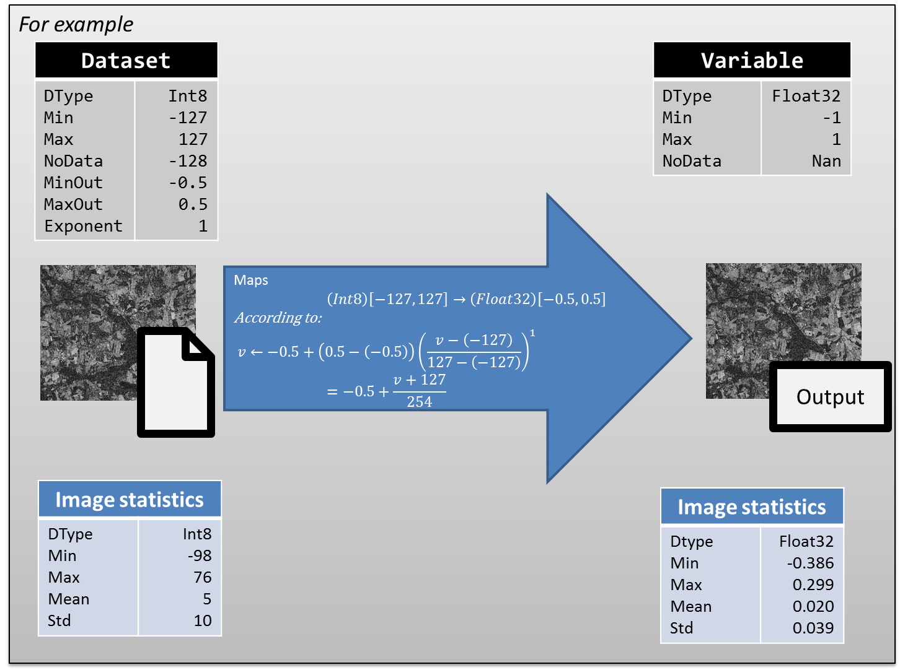

Indexation
Description
Referencing a new image in the Geocube is a process called indexation. The Geocube does not store images (it's the purpose of the object storage), but their URI and some metadata on them.
The indexation (IndexDatasets()) defines :
- how the geocube will read an image:
- Which layer of the image ? (in case of multiple layers are stored in the image)
- Which band(s) ?
- How to interpret pixel values ? (see dataformat)
- how the client will find the dataset:

NB:
- Geocube must have the rights to access the images.
- During the indexation, the file containing the image is not modified in any way. It's only the way the geocube will interpret the image that is defined.
- All the information provided during indexation are for the interpretation of the image. There is no (or limited) check during indexation that the user provides the right values.
Storage optimisation
In order to optimize the storage of a large volume of data, it can be decided to reduce the size of the data type (for example from float32 to int16) and/or scale the data.
So, the dataformat of the dataset can be different from the variable in some ways:
- For compression purpose :
- the data type is smaller. For example data is encoded in byte [0, 255] that maps to float [0, 1] in the variable.
- To optimize accuracy : the range of values is smaller than the one of the variable. Two examples :
- Given a variable between -1 and 1, the data in a given image is known to be in [0, 1] instead of [-1, 1]. To optimize accuracy, the data is encoded between 0 and 255 and min/max_out are [0, 1].
- Given a variable between 0 and 100, 90% of the data is known to be between 0 and 10. To optimize accuracy, the data is encoded between 0 and 255, using a non-linear mapping to [0, 100] using an exponent=2. Data is scaled according to the non-linear scaling in the diagram:
